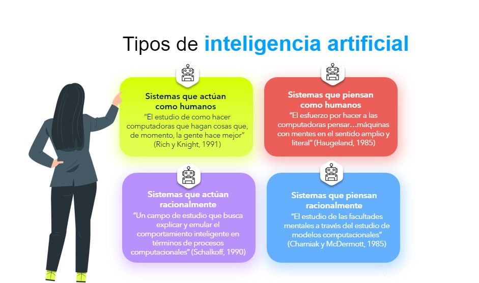

Clasificación Detallada
La IA permite crear diversos tipos de landing pages especializadas:
- Landing Pages con Chatbots: Brindan soporte automatizado 24/7 y capturan datos del usuario.
- Landing Pages Dinámicas: Modifican textos e imágenes según ubicación, intereses y comportamiento.
- Landing Pages con Pruebas A/B Automáticas: La IA decide qué versión ofrece mejores resultados.
- Landing Pages Predictivas: Anticipan acciones del usuario para guiarlo a la conversión.
- Landing Pages Multilingües: Adaptan el contenido a diferentes idiomas de manera automática.
Con estas herramientas, empresas como Amazon y Netflix han logrado tasas de conversión hasta 40 % mayores que con páginas tradicionales.
